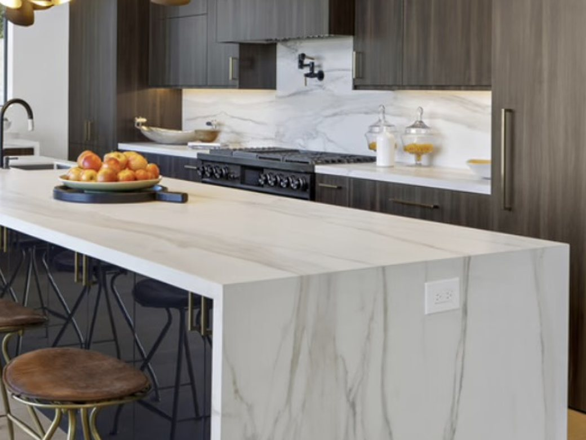

Quartz vs. granite vs. quartzite: choosing a kitchen countertop

Your countertop is the surface you'll touch most in the kitchen, and the one that's hardest to change later. Quartz, granite and quartzite are the three materials most homeowners end up comparing. Each is a good choice, but they behave differently in daily use.
Quartz: low maintenance and consistent
Quartz countertops are engineered. They are mostly ground natural quartz bound with resin and pigment. That makes them non-porous: coffee, wine and oil wipe off, and the surface never needs sealing.
The trade-off is heat. The resin can scorch or discolor under a hot pan, so trivets are a must. Quartz is also not meant for outdoor kitchens, where sunlight can fade it. Because it's manufactured, color and pattern are consistent from slab to slab, which helps on long runs and islands with seams.
Granite: natural stone that handles heat
Granite is quarried stone, so every slab is different. It handles heat well and resists scratches. Most granites benefit from a penetrating sealer every year or two, depending on the stone. Lighter, more porous granites need sealing more often. A simple test: drip water on the surface. If it darkens within a few minutes, it's time to reseal.
Quartzite: the marble look with more strength
Quartzite is a natural stone formed when sandstone is put under heat and pressure. It's harder than granite and often has the soft, veined look people want from marble, without marble's tendency to etch from lemon juice or vinegar. It costs more, needs sealing like granite, and its hardness makes fabrication slower.
One caution: some stones sold as "soft quartzite" are actually marble or dolomite and will etch. Ask your supplier to show a scratch and acid test on a sample before you commit.
Side by side
| Quartz | Granite | Quartzite | |
|---|---|---|---|
| Heat | Use trivets | Very good | Very good |
| Stains | Excellent | Good when sealed | Good when sealed |
| Sealing | Never | Every 1–2 years | Every 1–2 years |
| Look | Consistent pattern | Unique, speckled or veined | Unique, often marble-like |
| Typical cost | Mid to high | Low to high | High |
How to choose
- Busy family kitchen and no interest in maintenance: quartz.
- Serious cook who moves hot pans around: granite or quartzite.
- You want the look of marble without the worry: quartzite, or a marble-look quartz.
Whatever you choose, look at the full slab, not just a small sample. Natural stone varies a lot across one slab, and you should see where the veining will land on your island before it's cut.